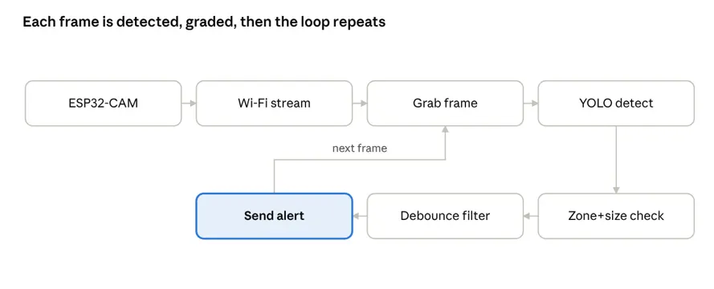
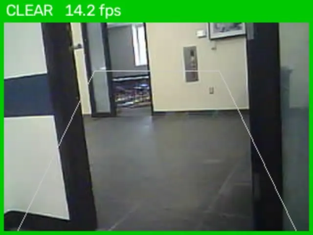
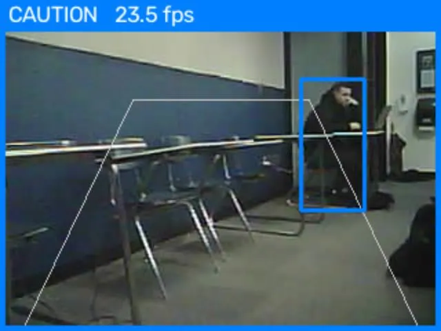

Pedestrian Automatic Emergency Braking prototype
An ESP32-CAM streams live video over its own Wi-Fi access point to a laptop. A Python application runs a pretrained YOLOv8 model restricted to people, then checks whether each person’s feet sit inside a trapezoidal driving-path polygon and whether the bounding box is tall enough to count as close. The highest alert in each frame passes through a debounce filter that is quick to raise and slow to clear, then appears as a color-coded border with a beep and a CSV log entry.
Checking only the feet against the path, instead of the whole box, cut false BRAKE alerts for bystanders. The system warns but does not brake, and box height is only a rough distance proxy.
| Scenario | Expected | Correct |
|---|---|---|
| Walk straight toward camera | BRAKE | 8/10 |
| Walk past the side | CAUTION | 6/10 |
| Stand far away in path | CAUTION or CLEAR | 7/10 |
| Empty scene | CLEAR | 8/10 |




The pipeline loops once per frame. Below it, the CLEAR, CAUTION, and BRAKE states.